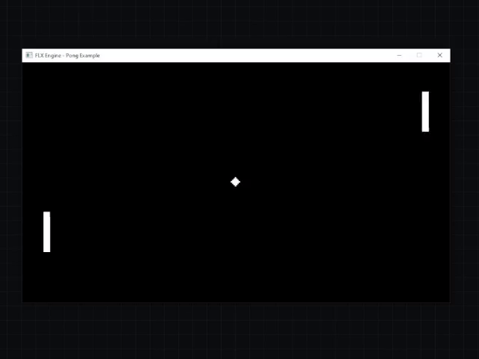
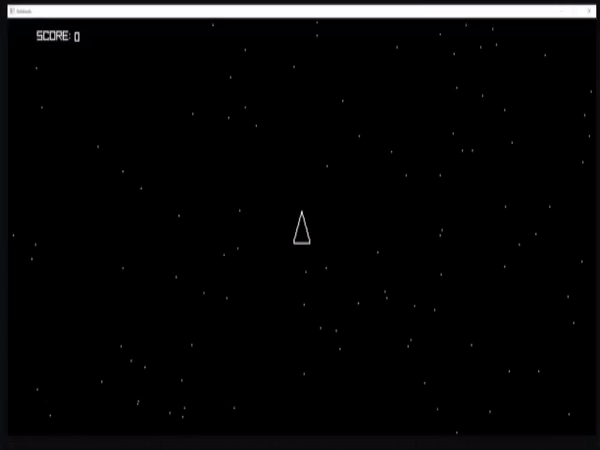
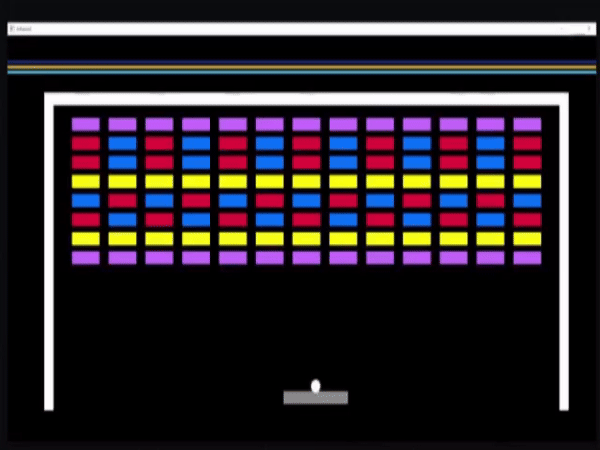
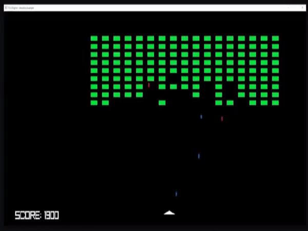
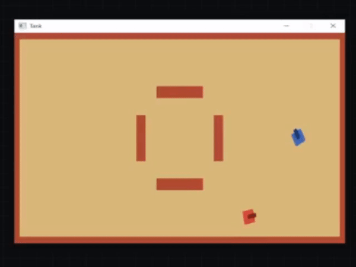
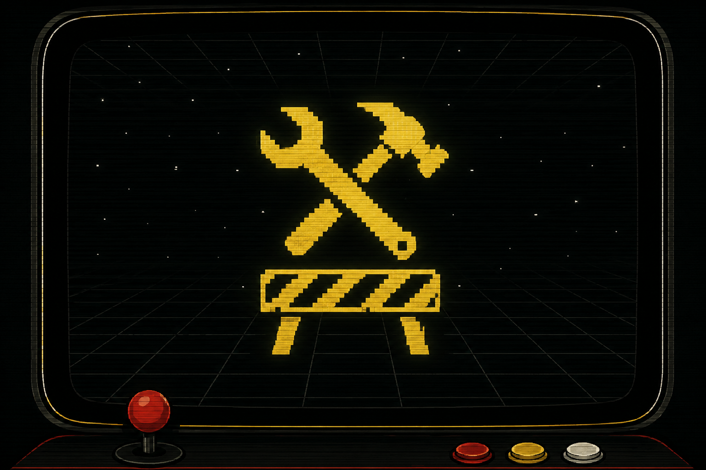

FLX Documentation
Ejemplos
Los ejemplos de FLX no son únicamente demostraciones visuales.
Los ejemplos de FLX son juegos completos construidos con las mismas herramientas disponibles para cualquier proyecto.
Cada uno explora una combinación diferente de objetos, mecánicas y comportamientos, desde las reglas fundamentales de Pong hasta la percepción y toma de decisiones de Tank.
Puedes utilizarlos como referencia, desmontarlos para entender cómo funcionan o simplemente ejecutarlos para ver qué puede construirse con FLX.
Listo
Pong
Dos barras. Una pelota. El inicio de todo.

Pong es el punto de entrada más sencillo a un proyecto FLX completo.
Con pocos objetos combina control del jugador, movimiento directo y polar, colisiones, rebotes, sonido y una IA básica que sigue la posición de la pelota.
Qué se puede aprender
- Estructura básica de un proyecto FLX
- Input y movimiento directo del jugador
- Movimiento polar mediante
advance() - Colisiones y resolución mediante
CollisionContact - Rebotes con
reflect_x()yreflect_y() - Sonido generado desde el propio objeto
- IA básica mediante búsqueda y seguimiento de objetos
Listo
Asteroids
Inercia, composición y supervivencia en el vacío.

Asteroids muestra cómo combinar movimiento polar, aceleración, inercia y rotación para construir objetos cuyo movimiento conserva su propia dinámica.
La nave, los asteroides, los disparos, la estela y los fragmentos utilizan el ciclo de vida y la creación de objetos para construir comportamientos más complejos a partir de elementos sencillos. El ejemplo también combina estado local y global, temporizadores y dibujo inmediato.
Qué se puede aprender
- Movimiento polar, aceleración e inercia
- Rotación y velocidad angular
- Creación y ciclo de vida de objetos
- Estado local y global
- Temporizadores y efectos de duración limitada
- Composición y definiciones reutilizables
- Dibujo inmediato combinado con objetos del mundo
- Efectos visuales construidos mediante objetos simples
Listo
Arkanoid
Rebotes, power ups y reglas emergentes.

Arkanoid muestra cómo construir reglas de juego más complejas combinando objetos, estados, temporizadores y creación.
Los ladrillos se generan mediante una cuadrícula, la pelota puede permanecer unida a la pala y los power ups modifican temporalmente su comportamiento y propiedades durante la partida.
Qué se puede aprender
- Creación de objetos mediante cuadrículas
- Composición y reutilización mediante
like - Estados y ciclo de vida de objetos
- Unión y separación mediante
attach()ydetach() - Temporizadores y efectos de duración limitada
- Power ups y modificación dinámica de propiedades
- Creación probabilística de objetos
- Colisiones filtradas por grupos
Listo
Invaders
Muchos enemigos. Una sola formación.

Invaders muestra cómo muchos objetos independientes pueden formar parte de una estructura mayor y compartir su movimiento.
La flota crea los invasores mediante una cuadrícula y desplaza la formación como un conjunto, mientras cada invasor conserva su propio comportamiento y puede crear sus propios disparos. El ejemplo combina además estado global, temporizadores y dibujo inmediato para construir las reglas y la interfaz de la partida.
Qué se puede aprender
- Creación de formaciones mediante cuadrículas
- Composición de objetos en estructuras mayores
- Movimiento coordinado de grupos de objetos
- Creación manual de proyectiles mediante
spawn() - Temporizadores para limitar acciones
- Estado global compartido entre objetos
- Dibujo inmediato para elementos de interfaz
- Comportamientos probabilísticos
Listo
Tank
Ver, recordar y decidir.

Tank muestra cómo construir comportamientos autónomos a partir de la información que un objeto puede obtener de su entorno.
El tanque enemigo utiliza rayos para detectar al jugador y los obstáculos, recuerda la última posición observada y combina estado local y temporizadores para buscar, perseguir, disparar o evitar una pared.
Qué se puede aprender
- Movimiento polar y rotación
- Percepción del entorno mediante
ray() - Estado local como memoria del objeto
- Temporizadores para mantener decisiones en el tiempo
- Comportamientos autónomos basados en percepción
- Detección y evasión de obstáculos
- Creación y comportamiento de proyectiles
- Recreación de objetos mediante iteradores
Próximamente
La siguiente generación

Los próximos ejemplos explorarán una nueva etapa de FLX: construir juegos dentro de las capacidades y restricciones declaradas por una máquina.
Nuevos ejemplos aparecerán aquí a medida que esas capacidades formen parte del engine.